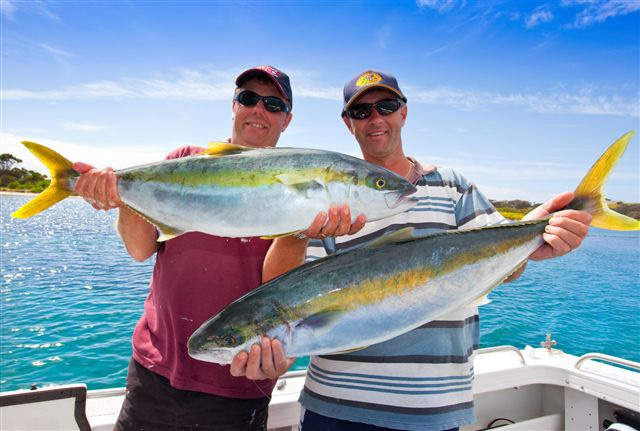
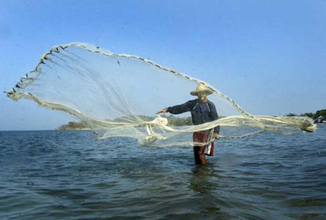
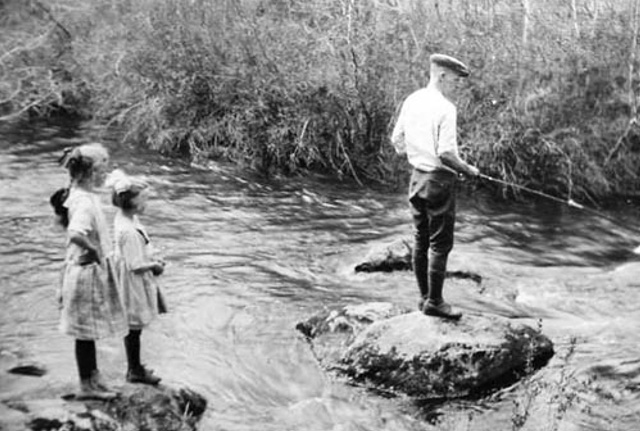

What Is Fishing?

Fishermen And Fish Consumption

History Of Fishing


Forum
Would you like to learn more about fishing?
Please Sign up in our forum.
Moon Calendar
News
How to Fish for Shark
Fishing has traditionally been a way for mankind to nourish itself. Today, fishing has taken on more of a ...more